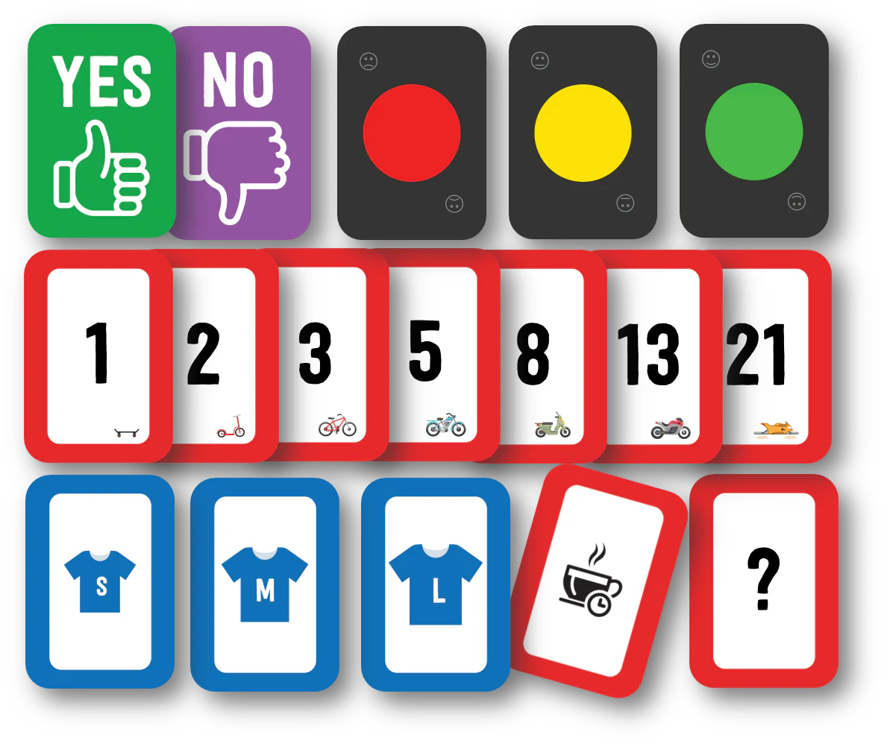
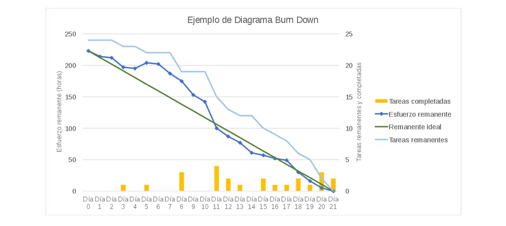
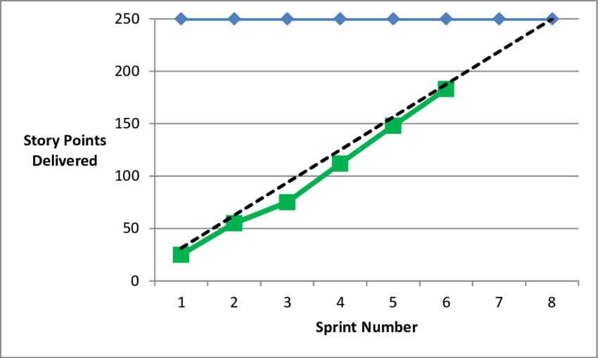

Introducción a la gestión ágil de proyectos.
La gestión ágil de proyectos es fundamental para un Scrum Master puesto que nos ayuda a comprender los principios y enfoques que guían las metodologías ágiles. Se basa en un conjunto de valores y principios que priorizan la adaptabilidad, la colaboración y la entrega de valor continuo.
El manifiesto Ágil.El manifiesto ágil es un documento creado en 2001, por un grupo de expertos en desarrollo de software, en este documento se establecen cuatro valores fundamentales:
I.
Individuos e interacciones sobre procesos y herramientas.
II.
Software funcionando sobre documentación extensiva.
III.
Colaboración con el cliente sobre negociación contractual.
IV.
Respuesta al cambio sobre seguir un plan estricto.
12 Principios ágiles.
I. Nuestra mayor prioridad es satisfacer al cliente mediante la entrega temprana y continua de software con valor.
II. Aceptamos que los requisitos cambien, incluso en etapas tardías del desarrollo. Los procesos ágiles aprovechan el cambio para proporcionar ventaja competitiva al cliente.
III. Entregamos software funcional frecuentemente, entre dos semanas y dos meses, con preferencia al periodo de tiempo más corto posible.
IV. Los responsables de negocio y los desarrolladores trabajamos juntos de forma cotidiana durante todo el proyecto.
V. Los proyectos se desarrollan en torno a individuos motivados. Hay que darles el entorno y el apoyo que necesita, y confiarles la ejecución del trabajo.
VI. El método más eficiente y efectivo de comunicar información al equipo de desarrollo y entre sus miembros es la conversación cara a cara.
VII. El software funcionando es la medida principal de progreso.
VIII. Los procesos Ágiles promueven el desarrollo sostenible. Los promotores, desarrolladores y usuarios debemos ser capaces de mantener un ritmo constante de forma indefinida.
IX. La atención continua a la excelente técnica y al buen diseño mejora la Agilidad.
X. La simplicidad, o el arte de maximizar la cantidad de trabajo no realizado, es esencial.
XI. Las mejoras arquitecturas, requisitos y diseños emergen de equipos autoorganizados.
XII. A intervalos regulares el equipo reflexiona sobre cómo ser más efectivopara a continuación ajustar y perfeccionar su comportamiento en consecuencia.
Enfoque iterativo e Incremental.
Los proyectos ágiles se dividen en iteraciones
Cada iteración produce un incremento de software funcional.
La retroalimentación constante permite ajustes y mejoras continuas.
Roles y responsabilidades.
Los roles en equipos ágiles incluyen al Scrum Master, el Propietario del producto (Product Owner) y el Equipo de desarrollo.
La colaboración y la toma de decisiones compartida son esenciales.
Herramientas y prácticas.
Scrum, Kanban, Extreme Programming (XP) y Lean son algunas de las metodologías y prácticas ágiles.
Técnicas como la planificación de releases, la estimación ágil y la inspección constante son parte del enfoque.
Diferencias entre la gestión de proyectos tradicionales y la gestión de proyectos ágiles.
|
| Diferencias en: |
Tradicional |
Ágiles |
| Enfoque |
Se basa en un enfoque secuencial y planificado. Se define todo el alcance y se sigue un plan detallado desde el inicio. |
Es iterativo e incremental. Se adapta a medida que se obtiene retroalimentación y se priorizan las características más importantes |
| Planificación |
Se planifica todo el proyecto al principio. Los cambios pueden ser costosos y difíciles de implementar. |
La planificación es flexible y se ajusta en cada iteración. Los cambios son bienvenidos. |
| Documentación |
Énfasis en documentación extensa (plan de proyecto, especificaciones). |
Documentación justa y necesaria. Se valora más el software funcionando. |
| Entrega de Valor. |
El Valor se entrega al final del Proyecto. |
Entrega de Valor constante en cada iteración. |
| Flexibilidad ante Cambios |
Cambios pueden ser costosos y afectar el cronograma. |
Cambios son parte del proceso y se manejan fácilmente. |
| Comunicación y Colaboración. |
Comunicación formal y jerárquica. |
Comunicación abierta y colaborativa. |
| Roles y Responsabilidades |
Roles fijos (gerente de proyecto, analista, desarrollador). |
Roles adaptables (Scrum Master, Propietario del Producto, Equipo de Desarrollo). |
Metodologías ágiles.
Aquí les dare una introducción muy pequeña y nada detallada de las diferentes metodologías que se pueden gestionar con los proyectos ágiles. Mas adelante se decriben ya de una forma completa, con sus principios, valores y fundamentos esenciales, empecemos con:
Kanban
Kanban es un enfoque visual para la gestión de proyectos y flujos de trabajo, cuenta con diferentes elementos como el Tablero Kanban, Tarjetas Kanban, WIP, etc.
Tablero Kanban:
Utiliza columnas para representar etapas del proceso.
Las tarjetas Kanban (representando tareas o elementos) se mueven de una columna a otra según su estado.
Visualiza el flujo de trabajo y permite gestionar el trabajo de manera eficiente.
Extreme Programming (XP).
Es una metodología ágil de desarrollo de software que se enfoca en la calidad, la comuncación y la adaptabilidad.
Prácticas de XP:
Programación en pareja: Dos programadores trabajan juntos en el mismo código.
Programación en pareja: Dos programadores trabajan juntos en el mismo código.
Integración Continua: Se integran cambios al código constantemente.
Pruebas automatizadas: Se escriben pruebas antes de implementar funcionalidades.
Gestión de Proyectos Lean.
Lean es un enfoque que se origina en la manufactura y se ha aplicado exitosamente en la gestión de proyectos.
Orígenes y conceptos de Lean:
Lean se basa en los principios del Sistema de producción de TOYOTA.
Busca eliminar desperdicios, optimizar procesos y maximizar el valor para el cliente.
Eliminación de Desperdicios:
Se identifican y reducen actividades innecesarias o que no agregan valor.
Ejemplos de desperdicios: Sobreproducción, esperas, transporte innecesario.Valor para el Cliente:
Se enfoca en lo que realmente importa para el cliente.
Cada actividad debe contribuir directamente al valor entregado.
Planificación y Estimación Ágil.
La planificación y estimación ágil se centran en la adaptabilidad, la colaboración y la entrega de valor constante. Al tener en cuenta estos principios, los equipos pueden enfrentar los desafíos de manera efectiva y lograr resultados existosos en sus proyectos.
Planificación Ágil.
1. Iterativa e Incremental.
En lugar de planificar todo el proyecto al principio, la planificación ágil se divide en iteraciones (generalmente llamadas "Sprints" en Scrum).
Cada iteración tiene un duración fija (por ejemplo, 2 semanas) y se enfoca en un conjuto específico de tareas o funcionalidades.
2. Priorización Basada en Valor.
Se identifican las características o historias de usuario más valiosas para el cliente.
Estas se incluyen en el Backlog del producto (ya veremos mas delante que es el Backlog del Producto) y se priorizan según si importancia.
3. Planificación de lanzamientos (Releases).
Se establecen releases (entregas) a lo largo del proyecto.
Cada release incluye un conjunto de funcionalidades completas y listas para ser entregadas.
4. Reuniones de Planificación.
Al comienzo de cada iteración, el equipo se reúne para planificar el trabajo.
Se selecciona las historias de usuario que se abordarán en el Sprint actual.
5. Flexibilidad ante cambios.
La Planificación ágil permite ajustes y cambios en función de la retroalimentación y las necesidades cambiantes del cliente.
1. Story Points.
En lugar de estimar horas, se utilizan Story Points.
Los Story Points reflejan la complejidad y el esfuerzo relativo de una historia de usuario.
2. Técnica de Poker Planning.
El equipo se reúne y discute cada historia de usuario.
Cada miembro asigna Story Points de forma anónima.
Luego, se revelan las estimaciones y se buscan consenso.
3. Velocidad del Equipo.
La velocidad es la cantidad de Story Points que el equipo puede completar en una iteración.
Se utiliza para planificar futuros Sprints.
4. Estimación Continua.
Las estimaciones se revisan y ajustan en cada iteración.
La retroalimentación y el aprendizaje constante mejoran la precisión.
Planificación de entregas (releases) y Sprints.
Planificación de Entregas (Releases).
La planificación de releases se centra en la entrega de valor al cliente ne intervalos regulares.
1. Identificación de Objetivos.
El equipo colabora con las partes interesadas (Stakeholders) para definir los objetivos del proyecto.
Se establecen las metas a largo plazo y se priorizan las características clave.
2. Creación del Backlog del Producto.
Se recopilan todas las historias de usuario, funcionalidades y requisitos.
Estos elementos se organizan en el Backlog del Producto.
3. Priorización y Selección.
El Propietario del Prodcuto (Product Owner) prioriza las historias de usuario según el valor para el cliente.
Se seleccionan las historias que se incluiran en la próxima release.
4. Estimaciones y Planificación.
Esto es la estimación Ágil.
5. Comunicación y compromiso.
Se comunica el plan de entrega a todos los involucrados.
El equipo se compromete a entregar las funcionalidades planificadas.
Planificación de Sprints.
La planificación de Sprints se enfoca en las iteraciones cortas y regulares del proyecto (generalmente de 1 a 4 semanas). En lo personal si una iteración dura más de 2 semanas, es señal de que algo no esta bien, según la ágilidad nos da este tiempo hasta 4 semanas, pero repito, desde mi punto de vista profesional esto nos indica que el Backlog no esta bien priorizado o requiera revisión alguna.
1. Selección del Backlog del Sprint.
Al comienzo de cada Sprint, el equipo selecciona un conjunto de historias del backlog del producto.
Estas historias se incluirán en el Sprint actual.
2. Estimaciones detalladas.
El equipo desglosa las historias de usuario en tareas más pequeñas.
Se estima el esfuerzo para cada tarea.
3. Planificación de Tareas.
Se asignan las tareas a los miembros del equipo.
Se crea un plan detallado para el Sprint.
4. Reunión de Planificación del Sprint.
El equipo se reúne para discutir el plan y comprometerse con las tareas.
Se establece el objetivo del Sprint.
5. Ejecución y seguimiento.
Durante el Sprint, el equipo trabaja en las tareas planificadas.
Se realiza un seguimiento diario en la reunción de Scrum (Daily Scrum)
6. Revisión y Retrospectiva.
Al final de cada Sprint, se revisan las funcionalidades completadas.
Se realiza una retrospectiva para aprender y mejorar.
Técnicas de estimación.

Estimaciones Planning Poker.
Es una técnica de estimación utilizada en Scrum. Esta técnica ayuda los equipos ágiles a estimar el tiempo y el esfuerzo necesarios para completar las tareas dentro del proyecto.
Durante la reunión de Planificación de un Sprint, todos los miembros del equipo, junto con el Product Owner y el Scrum master, utilizan cartas con diferentes números, generalmente del 0 al 100, para estimar el esfuerzo de una tarea. Cada miembro del equipo selecciona una carta que representa su estimación del esfuerzo requerido para completar una tarea.
Las cartas se revelan al mismo tiempo para evitar las estimaciones de los miembros del equipo se vean influenciadas por las de los demás. Si hay una gran discrepancia entre las estimaciones, los miembros del equipo discuten sus razones y luego vuelven a estimar hasta que llegan a un consenso.
· Preparación. Cada miembro del equipo recibe un conjunto de cartas de Planning Poker. Las cartas suelen tener números que siguen una secuencia, como la secuencia Fibonacci (0, 1, 2, 3, 5, 8, 13, 21, etc.).
· Presentación de la tarea. El Producto Owner presenta una historia de usuario o una tarea del Product Backlog que necesita ser estimada.
· Discusión. Los miembros del equipo discuten la tarea, haciendo preguntas al Product Owner si es necesario para aclarar cualquier detalle.
· Estimación. Cada miembro del equipo selecciona una carta de su mano que representa su estimación del esfuerzo requerido para completar la tarea.
· Revelación. Todos los miembros del equipo revelan sus cartas al mismo tiempo.
· Discusión de las diferencias. Si hay una gran discrepancia entre las estimaciones, los miembros del equipo discuten sus razones. Los miembros del equipo con las estimaciones más altas y más bajas explican su pensamiento.
· Nueva ronda de estimación. Se realiza una nueva ronda de estimación. Este proceso se repite hasta que el equipo llega a un consenso.
Estimaciones T-Shirt Size.
La estimación T-Shirt Size (Tallas de camiseta) es una técnica utilizada en Scrum y otras metodologías ágiles para evaluar el esfuerzo o la complejidad de las tareas o historias de usuario. En lugar de asignar valores numéricos específicos (como la estimación por puntos de historia), se utiliza un conjunto de tallas de camiseta: XS (extra pequeña), S (pequeña), M (mediana), L (grande), XL (extra grande) y XXL (Extra Extra Grande), cada talla representa una categoría relativa de esfuerzo o complejidad.
¿Cómo se usa?
Durante la planificación, el equipo Scrum revisa las tareas o historias de usuario.
Cada miembro del equipo asigna una talla de camiseta a cada elemento según su percepción de cuánto trabajo o complejidad implica.
¿Cuándo se debe usar?
Planificación a largo plazo. Al crear una hoja de ruta o planificación de lanzamientos.
Equipos nuevos: Ayuda a los equipos a acostrumbrarse a la estimación relativa antes de adoptar técnicas más detalladas.
Situaciones donde la precisión no es crítica. Cuando no se necesita una estimación precisa en puntos de historia.
Story Points y Velocity.
Story Points (Puntos de Historia).
Los Story Points son una unidad de medida utilizada para estimar el esfuerzo para completar una tarea o historia de usuario.
Se expresan en términos de compejidad, riesgo e incertidumbre en lugar de horas o días.
Por ejemplo, una historia de usuario para desarrollar una pantalla de inicio de sesión podría recibir 3 Story Points, mientras que integrar una pasarela de pagos compleja podría ser de 8 puntos.
Velocity (Velocidad).
Velocity mide la productividad del equipo en términos de Story Points completados durante un período determinado (generalmente un Sprint).
Es una métrica que ayuda a predecir el rendimiento futuro del equipo.
Por ejemplo, si el equipo ha completado promedio de 15 Story Points por Sprint en el pasado, se puede usar para planificar el trabajo en futuros Sprints.
Control y seguimiento ágil.
Control Ágil.
1. Burndown Chart (Diagrama de Quemado).
Representa la cantidad de trabajo pendiente frente al tiempo.
Muestra si el equipo está en camino de completar todas las tareas planificadas para el sprint.
Por ejemplo, si el equipo ha completado promedio de 15 Story Points por Sprint en el pasado, se puede usar para planificar el trabajo en futuros Sprints.
2. Diagrama de Flujo Acumulado (Cumulative Flow Diagram, CFD).
Visualizar el flujo de trabajo a lo largo del tiempo.
Muestra la cantidad de trabajo en cada etapa (Columna del tablero Kanban).
Permite identificar cuellos de botella y optimizar el flujo.
Seguimiento Ágil.
1. Reuniones Diarias (Daily Scrum)
El equipo se sincroniza diariamente.
Comparten avances, obstáculos y ajustan el plan según sea necesario.
2. Revisión del Sprint.
Al final de cada Sprint, se muestra el trabajo completado.
Se recopila la retroalimentación del Propietario del Producto y las Partes Interesadas.
3. Retrospectiva del Sprint.
El equipo reflexiona sobre el Sprint.
Identifica oportunidades de mejora y define acciones para el próximo Sprint.
Gráficos Burndown y Burnup
Burndown Chart.

El gráfico Burndown es una herramienta clave en la gestión de proyecto ágiles, especialmente con Scrum. Su objetivo es seguir el avance y hacer previsiones de trabajo completado en el tiempo.
Representa la cantidad de trabajo pendiente frente al tiempo. Por lo general, se mide en puntos de historia o unidades similares
La línea en el gráfico muestra el trabajo pendiente, y la pendiente de la curva ayuda a ver la velocidad del equipo y permite al Propietario del Producto hacer previsiones.
Burnup Chart.

El gráfico Burnup es similar al Burndown, pero con una diferencia fundamental:
En el Burnup, se parte desde cero y se marca la cantidad de trabajo completado al final del sprint 0 (Sprint Zero) o del proyecto.
La curva en el Burnup va hacia arriba.
Diferencias y ventajas.
1. Cambios de Alcance:
El Burnup es más adecuado para gestionar cambios de alcance. si aumenta el trabajo realizado, el Burnup muestra visualmente el cambio, mientras que en el Burndown puede resulta confuso.
2. Claridad Visual:
El Burnup es más intuitivo para las Partes Interesadas. La línea verde marca los cambios de alcance, lo que facilita la comprensión.
3. Predicciones precisas:
Ambos gráficos permiten prever el trabajo completado, pero el Burnup es más claro cuando hay cambios en el alcance.
Adaptación e Inspección.
Inspección:
La inspección es un proceso continuo de evaluación y revisión.
Se trata de examinar de manera crítica los artefactos, procesos y resultados del proyecto.
La inspección permite:
- Identificar desviaciones.
- Evaluar el progreso hacia los objetivos.
- Detectar oportunidades de mejora.
Adaptación
La adaptación se basa en hallazgos de la inspección.
Implica ajustar el prceso o el plan según las circunstancias cambiantes.
La adaptación permite:
- Corregir desviaciones.
- Optimizar el rendimiento.
- Responder a nuevos requisitos o desafíos.
Control de Calidad y Pruebas.
Control de Calidad.
1. Integración Temprana.
En proyectos ágiles, el control de calidad se introduce desde el inicio.
El equipo de control de calidad trabaja junto con los desarrolladores para prever problemas, revisar requisitos y establecer estándares de calidad.
2. Feedback Continuo.
El control de calidad proporciona feedback rápido y continuo.
Se detectan errores y se realizan ajustes a medida que se dearrolla el producto.
3. Automatización de Pruebas.
En lugar de depender únicamente de pruebas manuales, se enfatiza la automatización de pruebas.
Las pruebas automatizadas permiten una verificación más rápida y eficiente.
Pruebas en Proyectos Ágiles.
1. Pruebas Continuas.
En un entorno ágil, las pruebas son parte integral de cada etapa del cliclo de vida.
Los técnicos de control de calidad prieban y vuelven a probar el producto con cada nueva característica.
2. Enfoque en la Velocidad y Calidad.
Las pruebas ágiles buscan un equilibro entre la velocidad de entrega y la calidad del producto.
Se prioriza la detección temprana de errores y la corrección inmediata.
3. Colaboración entre Desarrollo y Control de Calidad.
El equipo de desarrollo y el de control de calidad trabajan juntos para garantizar la calidad.
La comunicación constante y la retroalimentación son esenciales.
Comunicación efectiva en equipos ágiles.
Debes comprender la importancia de la comunicación efectiva en equipos ágiles, la colaboración y el intercambio de información son fundamentaes para el éxito de cualquier proyecto.
1. Cultura de Apertura y Transparencia.
Una cultura de apertura y transparencia es esencial.
Establece porlíticas de comunicación claras y fomenta la confianza.
Utiliza stand-ups diarios para compartir avances, desafíos y bloqueos.
Crea un espacio abierto para la retroalimentación y el debate.
2. Herramientas de Comunicación Ágiles.
Elige las herramientas adecuadas para mejorar la colaboración.
Ejemplos populares incluyen Slack, Microsoft Teams y Trello.
Estas herarmientas permiten la comunicación en tiempo real, el intercambio de archivos y la gestión de tareas.
3. Comunicación Visual.
La comunicación visual mejora la comprensión y el compromiso del equipo.
Utiliza pizarras, diagramas y gráficos para ilustrar ideas complejas.
Herramientas como Miro y Lucidchart facilitan la creación y el intermabio de diagramas y mapas mentales.
4. Técnicas de Facilicitación.
Las técnicas de facilitación aseguran que todos sean escuchados.
Prueba la regla de la "caja de tiempo" para limitar las discusiones.
Anima a los participantes a ser "primer oyente" antes de compartir sus opiniones.
5. Medir y Mejorar la Comunicación.
Evalúa y mejora la comunicación dentro del equipo.
Utiliza métricas ágiles como velocidad, tiempo de ciclo e índice de satisfacción del cliente.
Gestión de conflictos.
¿Qué hacer si hay conflictos de comunicación dentro del equipo?
Cuando surgen conflictos de comunicación dentro de un equipo, es fundamental abordarlos de manera efectiva para mantener la armonía y la productividad.
1. Fomenta la Escucha Activa.
Anima a los miembros del equipo a escuchar con atención y sin prejuicios.
Practicar la escucha activa ayuda a comprender mejor las perspectivas de los demás y a evitar malentendidos.
2. Establece Normas de Comunicación.
Define normas claras para la comunicación dentro del equipo.
Establece expectativas sobre la frecuencia, el tono y los canales de comunicación.
3. Resuelve Malentendidos Rápidamente.
Cuando surjan malentendidos, abórdalos de inmediato.
Aclara cualquier confusión y asegúrate de que todos estén en la misma página.
4. Utiliza Técnicas de Facilitación.
Emplea técnicas como la regla de la caja de tiempo (time boxing) en las reuniones para evitar que las discuciones se prolongue demasiado.
Fomenta la participación equitativa y evita que una sola persona domine la conversación.
5. Promueve la retroalimentación Constructiva.
Anima a los miembros del equipo a dar retroalimentación constructiva.
En lugar de culpar, enfoquémonos en encontrar soluciones y mejorar.
6. Facilita Sesiones de Resolución de Conflictos.
Si el conflicto persiste, organiza sesiones específicas para abordarlo.
Utiliza técnicas como la medición o el modelo de Thomas-Kilmann para encontrar soluciones colaborativas.
Agilidad a escala.
¿Qué es Scaling Agile?
Scaling Agile (o escalar Agile) se refiere al proceso de adaptar métodos ágiles, como Scrum y Kanban, para funcionar eficazmente en organizaciones más grandes.
Los equipos ágiles tradicionales están diseñados para grupos de cinco a once miembros, pero cuando las organizaciones crecen y tienen múltiples equipos, departamentos y proyectos interconectados, es necesario encontrar formas de escalar los principios ágiles para que funcionen en toda la organización.
Enfoque en la transformación cultural.
El escalado ágil implica una transformación cultural en la que las personas, prácticas y herramientas se centran en mejorar la colaboración y la ejecución de la organización en relación con su estrategia.
Se busca descentralizar la toma de decisiones, crear transparencia y adaptabilidad en torno al trabajo, y al mismo tiempo, integrar los valores ágiles.
Principales marcos de escalado Ágil.
SAFe (Scaled Agile Framework): Este marco ofrece patrones de organización y flujo de trabajo para implementar prácticas ágiles a gran escala. Combina desarrollo ágil de software, desarrollo de productos Lean y pensamiento sistémico.
LeSS (Large Scale Scrum): Esencialmente, LeSS aplica Scrum a gran escala. Se enfoca en la simplicidad y minimalismo, manteniendo menos reglas, roles y artefactos para lograr objetivos.
Gestión de Dependencias.
¿Qué son las dependencias?
Una dependencia se refiere a una situación en la que el progreso de un elemento está sobordinado a la ejecución o finalización de otra acción, elemento o cumplimiento de una condición específica.
En el contexto de proyectos grandes y complejos, las dependecias peueder ser intrincadas y afectar múltiples actores y equipos.
Efectos de las dependecias.
Aumento del tiempo de entrega (lead time) de proyectos o servicios y su variabilidad.
Restricciones en la secuenciación de actividades e ítems.
Conflicto entre equipos que compiten por recursos limitados.
Tipos de dependencias.
Inputs concretos: productos o servicios necesarios para avanzar en el proceso.
Recursos especializados: Personas con conocimientos específicos o medios particulares.
Enfoques tradicionales vs. ágiles.
En la gestión tradicional de proyectos, las dependencias se manejan de manera rígida y jerárquica.
En la gestión ágil, se busca flexibilidad y adaptabilidad para resolver dependencias de manera colaborativa.
Gestión de dependencias en Kanban**
Kanban es un método ágil que permite visualizar y gestionar dependencias de manera eficiente.
Identifica y mapea las dependencias.
Prioriza tareas según las dependencias
Facilitar la colaboración entre equipos para resolver bloqueos.
Cierre y mejora continua.
Mejora Continua.
Es un proceso constante de análisis, identificación de oportunidades y realización de cambios graduales en los procesos, productos y equipos. En lugar de cambios drásticos, se enfoca en ajustes pequeños y constantes para optimizar el rendimiento y la eficiencia.
Herramientas Clave:
Retrospectivas: Estas reuniones permiten al equipo reflexionar sobre lo que ha ido bien y lo que se puede mejorar. Se realizan al final de cada Sprint o de manera regular
Plan-Do-Check-Act (PDCA): Un ciclo que involucra planificar, ejecutar, evaluar y actuar. Se utiliza para implementar cambios de manera iterativa y aprender de los resultados.
Cierre.
El cierre en Scrum se refiere al final de un Sprint o proyecto. Es un momento crucial para revisar y aprender.
Actividades de Cierre:
Revisión del Sprint: El equipo y los Stakeholders evalúan el incremento entregado y proporcionan retroalimentación.
Retrospectiva del Sprint: Reflexión sobre el proceso y las prácticas. ¿Qué funcionó bien? ¿Qué se puede mejorar?
Actualización del backlog: Se ajusta el backlog con base en lo aprendido durante el sprint.
El Cierre no es solo un punto final, sino una oportunidad para aprender y aplicar mejoras en el próximo ciclo.
Nuevamente decirte que si llegaste al final de este cápitulo, te puedo decir que estas a un paso de ser Scrum Master, en el próximo te dare el contexto completo del marco de trabajo Scrum y despúes las Métodologías ágiles que se pueden utilizar con Scrum tanto en su forma más sencilla y práctica, como en el escalado ágil.